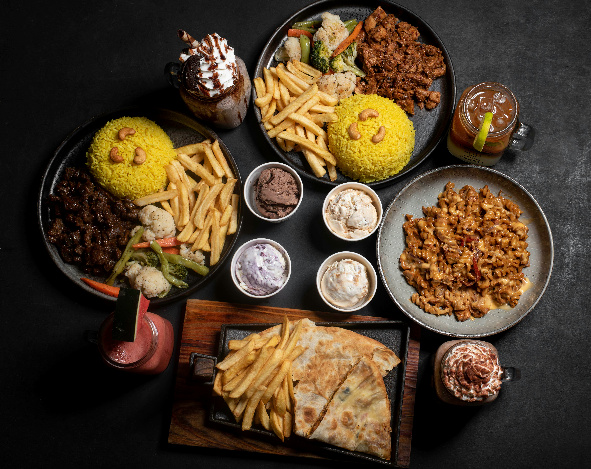
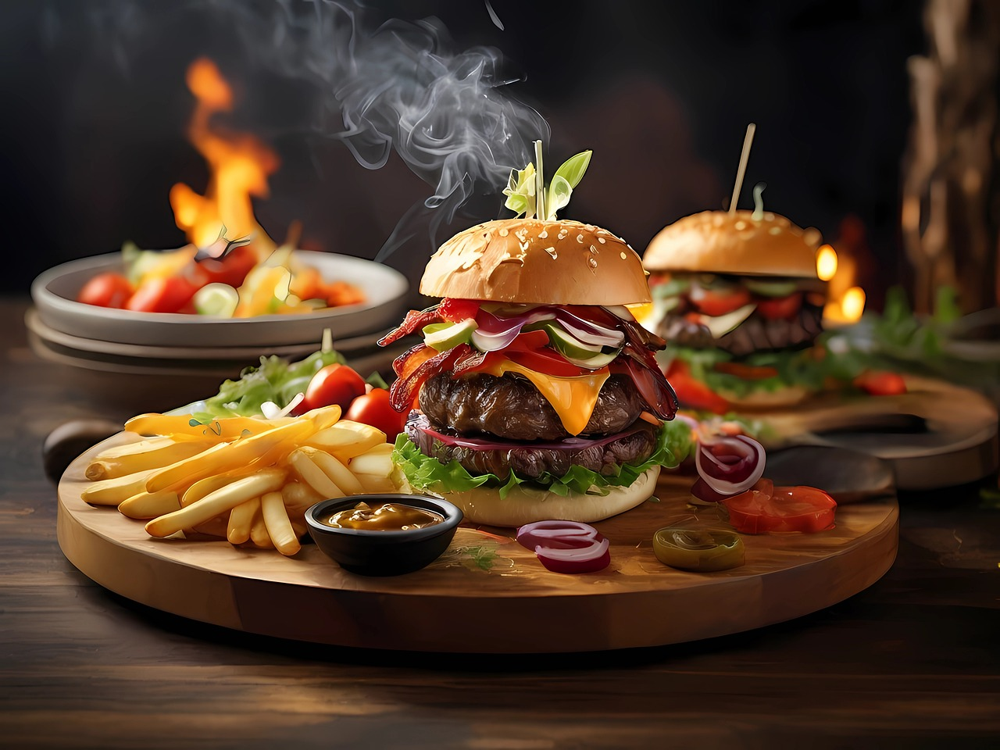

Welcome to the odin restaurant
Welcome to Odin Restaurant, where culinary excellence meets mythical inspiration. Named after the wise Norse god Odin, we offer a menu that fuses traditional recipes with modern creativity. Savor our dishes crafted from the finest local ingredients in a warm, inviting atmosphere. Join us for an unforgettable dining experience where every bite tells a story.
Here is our services !!

Odin's Feast Platter


Thor's Burger

"Odin Restaurant offers a fantastic dining experience with its cozy ambiance and delicious food. The Odin’s Platter and Viking Steak were standout dishes, full of flavor. Service was friendly but a bit slow during peak hours. Overall, a great spot with memorable meals and a unique atmosphere."
-Sarah Thompson